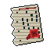
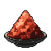
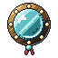
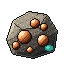
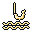
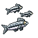
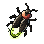

Works of the Post
Arts
14 points to spend
✓
Seals
2 can be inscribed
Steles
Delving Lv 1
each can go up
each can go up

FavoursMagistrate Qian's
County Tribute
County Tribute

FurnaceCinnabar line lit
refined 4 / 20
refined 4 / 20
Flags
1 of 2 planted
Reed Shallows
Reed Shallows

MirrorElder Hu's
Echoes in Bronze
Echoes in Bronze
Seals serve every character, as far as its own craft level reaches. Paid from the Storehouse. +2 below.
Seal of the Open Vein
Lv 0/30 · Delving +3 Finesse a level

58 / 25
Copper
Inscribe
Seal of the Green Stem
Lv 1/30 · Foraging +3.0 Finesse · Tester draws 1
43 / 28
Willow Moss
Inscribe

Seal of the Still Line
Lv 0/30 · Angling +3 Finesse a level

0 / 25
River Minnow
Inscribe
Seal of the Light Net
Lv 0/30 · Netting +3 Finesse a level

0 / 25
Glowfly
Inscribe
Seal of the Patient Snare
Lv 0/30 · Snaring +3 Finesse a level
1 / 25
Jade Frog
Inscribe
Seal of the Ancestor's Name
Lv 0/30 · Rites +3 Finesse a level
0 / 25
Spirit Wisp
Inscribe
What your works add
Summed for Tester, at every post
Vein Delving
Tool power +0.3 · Stele Lv 1
Spirit Foraging
Finesse +3 · Seal Lv 1
Angling, Netting, Snaring, Rites
Nothing yet
Every post
Craft Diligence +0.49% · Dreaming Artisan
Posts at Reed Shallows
Craft Diligence +1.0% · plain flag Lv 0
Pouches
Nothing yet · Seal of the Deep Pouch